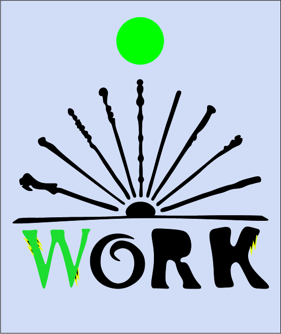

Linje afsnit
Work logo
Retfærdigheds logo
Forside
På denne forside vil jeg starte med at vise disse tre images som jeg har lavet i Adobe Illustartor, som vi på uddannelsen er blevet introduceret til at lærer at arbejde med i Tema 4 og Tema 5. Med denne forside på sitet vil jeg vise de anvendte metoder og teorier, jeg gør brug af i Adobe Illustartor. Det første image vist under Linje afsnit, som er med til at skabe opmærksomhed over websitet, det er i fil-formatet png. Det andet image vist under Work logo. Det er inspieret af Harry Potter filmene. Det skal være et logo til et website med et syn på den magiske verden, det er i fil-formatet png. Det trejde image vist under Retfærdigheds logo. Det er et logo, der skal vise en menneskelig Retfærdigheds vægt. Dette logo skal vise de to forskellige farvers betydning i retfærdigheden tegn, det er i fil-formatet webp. I denne del af udviklingsproces gør jeg brug af disse relevante metoder, principper og teknologier. Der har i klassen været et godt mix af forskelligheder til at danne gode og konstruktive grupper. Jeg har været godt tilfreds i mine gruppedannelser.